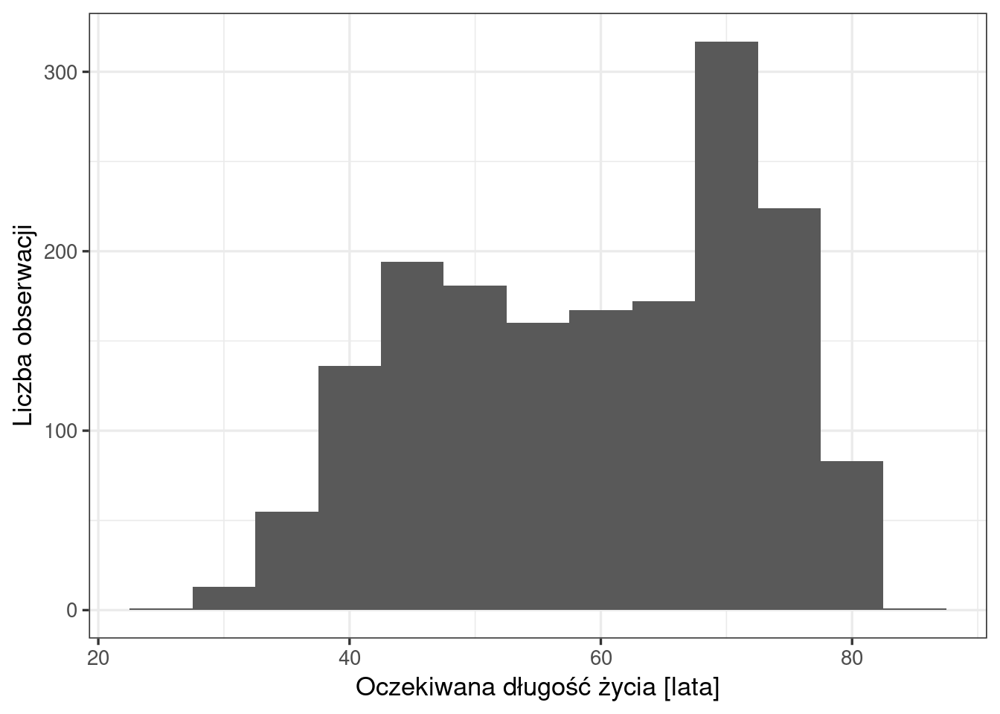
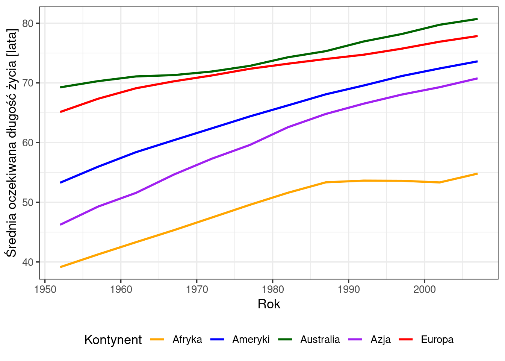

# wczytanie pakietu tidyverse: zestawu pakietów do przetwarzania danych (dplyr)
# i tworzenia wykresów (ggplot2)
library(tidyverse)
# wczytanie pliku CSV i zapisanie tabeli jako obiektu o nazwie dane;
# ścieżka jest względna wobec folderu z plikiem .qmd
dane <- read.csv("dane/gapminder_regions.csv", encoding = "UTF-8")20 Oczekiwana długość życia na kontynentach w latach 1952–2007
Jak czytać ten rozdział
Rozdział pokazuje na przykładzie, jak wykonuje się obliczenia dla poszczególnych etapów raportu i jak interpretuje się uzyskane wyniki. Układ rozdziału służy nauce i różni się od typowej konstrukcji raportu: każda sekcja składa się z kodu R z wynikiem, interpretacji — tekstu, który wchodzi do raportu — oraz części Obliczenia w R, która wyjaśnia działanie kodu.
Sekcja Sekcja 20.7 wskazuje, które elementy rozdziału tworzą raport, a plik kod/20_raport.qmd zawiera je w układzie raportu, który można otworzyć i wyrenderować. Kompletny przykład raportu przedstawia Rozdział 23.
20.1 Wprowadzenie
Raport opisuje oczekiwaną długość życia w chwili urodzenia w 142 krajach świata w latach 1952–2007: jej poziom i zróżnicowanie na świecie oraz zmiany w czasie na poszczególnych kontynentach.
Raport odpowiada na pytania badawcze:
- Jaka jest typowa oczekiwana długość życia na świecie i jak rozkładają się jej wartości? (Sekcja 20.3)
- Jak zmieniała się oczekiwana długość życia na kontynentach w latach 1952–2007? (Sekcja 20.4)
20.2 Dane
20.2.1 Źródło i zakres
Zbiór gapminder_regions.csv zawiera dane Gapminder (https://www.gapminder.org/data/), dostępne w R w pakiecie gapminder (licencja CC0). Kolumny z podziałem regionalnym, grupami dochodowymi i grupami gospodarczymi oraz nazwy polskie dodano w materiałach kursu. Kolumna Kod pochodzi z bazy World Development Indicators Banku Światowego; dla Reunionu i Tajwanu, nieobecnych w tej bazie, kod uzupełniono według normy ISO 3166. W pakiecie gapminder Turcja należy do Europy; w tym zbiorze przypisano ją do Azji, dlatego Azja obejmuje 34 kraje, a Europa 29 (w pakiecie: 33 i 30). Wartości lifeExp, pop i gdpPercap są takie same jak w pakiecie.
Zbiór obejmuje 142 kraje i 12 lat: od 1952 do 2007 roku, co 5 lat. Jednostką obserwacji jest kraj w danym roku — każdy kraj występuje w zbiorze 12 razy, a zbiór liczy 142 × 12 = 1704 obserwacje.
| Kolumna | Znaczenie |
|---|---|
country, kraj |
nazwa kraju po angielsku i po polsku |
continent, kontynent |
kontynent po angielsku i po polsku, 5 kategorii |
subregion, subregion_pl |
subregion świata po angielsku i po polsku, 18 kategorii |
year |
rok obserwacji |
lifeExp |
oczekiwana długość życia w chwili urodzenia, w latach |
pop |
liczba ludności |
gdpPercap |
PKB per capita w dolarach amerykańskich, skorygowany o inflację |
income_grp |
grupa dochodowa Banku Światowego, 5 kategorii uporządkowanych |
income_grp_pl |
grupa dochodowa w 3 kategoriach: niski, średni, wysoki |
economy_grp |
grupa gospodarcza, 7 kategorii uporządkowanych |
Kod |
trzyliterowy kod kraju (ISO 3166-1 alfa-3) |
W raporcie wykorzystywane są trzy kolumny: lifeExp (badana cecha), kontynent (podział na grupy) i year (czas).
20.2.2 Przegląd danych
# pierwsze 6 wierszy tabeli
head(dane) country continent year lifeExp pop gdpPercap
1 Afghanistan Asia 2002 42.129 25268405 726.7341
2 Afghanistan Asia 2007 43.828 31889923 974.5803
3 Afghanistan Asia 1992 41.674 16317921 649.3414
4 Afghanistan Asia 1972 36.088 13079460 739.9811
5 Afghanistan Asia 1987 40.822 13867957 852.3959
6 Afghanistan Asia 1982 39.854 12881816 978.0114
economy_grp income_grp subregion subregion_pl
1 7. Least developed region 5. Low income Southern Asia Azja Południowa
2 7. Least developed region 5. Low income Southern Asia Azja Południowa
3 7. Least developed region 5. Low income Southern Asia Azja Południowa
4 7. Least developed region 5. Low income Southern Asia Azja Południowa
5 7. Least developed region 5. Low income Southern Asia Azja Południowa
6 7. Least developed region 5. Low income Southern Asia Azja Południowa
kontynent kraj income_grp_pl Kod
1 Azja Afganistan niski AFG
2 Azja Afganistan niski AFG
3 Azja Afganistan niski AFG
4 Azja Afganistan niski AFG
5 Azja Afganistan niski AFG
6 Azja Afganistan niski AFG# struktura tabeli: liczba obserwacji i kolumn, typ i pierwsze wartości każdej kolumny
str(dane)'data.frame': 1704 obs. of 14 variables:
$ country : chr "Afghanistan" "Afghanistan" "Afghanistan" "Afghanistan" ...
$ continent : chr "Asia" "Asia" "Asia" "Asia" ...
$ year : int 2002 2007 1992 1972 1987 1982 1997 1967 1957 1977 ...
$ lifeExp : num 42.1 43.8 41.7 36.1 40.8 ...
$ pop : int 25268405 31889923 16317921 13079460 13867957 12881816 22227415 11537966 9240934 14880372 ...
$ gdpPercap : num 727 975 649 740 852 ...
$ economy_grp : chr "7. Least developed region" "7. Least developed region" "7. Least developed region" "7. Least developed region" ...
$ income_grp : chr "5. Low income" "5. Low income" "5. Low income" "5. Low income" ...
$ subregion : chr "Southern Asia" "Southern Asia" "Southern Asia" "Southern Asia" ...
$ subregion_pl : chr "Azja Południowa" "Azja Południowa" "Azja Południowa" "Azja Południowa" ...
$ kontynent : chr "Azja" "Azja" "Azja" "Azja" ...
$ kraj : chr "Afganistan" "Afganistan" "Afganistan" "Afganistan" ...
$ income_grp_pl: chr "niski" "niski" "niski" "niski" ...
$ Kod : chr "AFG" "AFG" "AFG" "AFG" ...# podsumowanie wszystkich kolumn tabeli
summary(dane) country continent year lifeExp
Length:1704 Length:1704 Min. :1952 Min. :23.60
Class :character Class :character 1st Qu.:1966 1st Qu.:48.20
Mode :character Mode :character Median :1980 Median :60.71
Mean :1980 Mean :59.47
3rd Qu.:1993 3rd Qu.:70.85
Max. :2007 Max. :82.60
pop gdpPercap economy_grp income_grp
Min. :6.001e+04 Min. : 241.2 Length:1704 Length:1704
1st Qu.:2.794e+06 1st Qu.: 1202.1 Class :character Class :character
Median :7.024e+06 Median : 3531.8 Mode :character Mode :character
Mean :2.960e+07 Mean : 7215.3
3rd Qu.:1.959e+07 3rd Qu.: 9325.5
Max. :1.319e+09 Max. :113523.1
subregion subregion_pl kontynent kraj
Length:1704 Length:1704 Length:1704 Length:1704
Class :character Class :character Class :character Class :character
Mode :character Mode :character Mode :character Mode :character
income_grp_pl Kod
Length:1704 Length:1704
Class :character Class :character
Mode :character Mode :character
# zamiana wszystkich kolumn tekstowych na zmienne typu factor (zmienne jakościowe)
dane <- dane |>
mutate(across(where(is.character), as.factor))# podsumowanie zmiennej jakościowej: liczba obserwacji w każdej kategorii
summary(dane$kontynent) Afryka Ameryki Australia Azja Europa
624 300 24 408 348 # podsumowanie zmiennej ilościowej: minimum, kwartyle, mediana, średnia i maksimum
summary(dane$lifeExp) Min. 1st Qu. Median Mean 3rd Qu. Max.
23.60 48.20 60.71 59.47 70.85 82.60 Interpretacja. Zbiór zawiera 1704 obserwacje i 14 kolumn. Najwięcej obserwacji dotyczy Afryki (624), następnie Azji (408), Europy (348) i Ameryk (300); kontynent „Australia” reprezentują 24 obserwacje, czyli dwa kraje — Australia i Nowa Zelandia. Oczekiwana długość życia przyjmuje wartości od 23,6 do 82,6 roku. Kolumna lifeExp nie zawiera braków danych.
Obliczenia w R.
library(tidyverse)wczytuje zestaw pakietówtidyverse. Funkcje z tych pakietów są dostępne dopiero po wczytaniu.read.csv()wczytuje plik tekstowy, w którym wartości oddzielone są przecinkami, i zwraca tabelę (ramkę danych, ang. data frame): każdy wiersz pliku to jedna obserwacja, każda kolumna — jedna zmienna.- Znak
<-oznacza przypisanie: wynik działania po prawej stronie zostaje zapisany jako obiekt o nazwie podanej po lewej stronie. Od tej chwili każde odwołanie dodaneoznacza wczytaną tabelę. head()zwraca pierwsze 6 wierszy tabeli.str()opisuje strukturę tabeli: pierwszy wiersz wyniku podaje liczbę obserwacji (obs.) i kolumn (variables), kolejne wiersze — nazwę, typ i pierwsze wartości każdej kolumny. Typchroznacza tekst,int— liczby całkowite,num— liczby rzeczywiste.- Factor (czynnik) to typ zmiennej, którym R zapisuje zmienne jakościowe. Zmienna typu factor przyjmuje wartości ze skończonego zbioru kategorii, nazywanych poziomami (ang. levels). Kolumna tekstowa przechowuje dowolne napisy; po zamianie na factor R traktuje każdą różną wartość jako kategorię — może zliczać obserwacje w kategoriach i dzielić według nich dane na grupy.
mutate(across(where(is.character), as.factor))zamienia typ kolumn:where(is.character)wybiera wszystkie kolumny tekstowe,as.factorzamienia każdą z nich na factor, amutate()zapisuje zmienione kolumny w tabeli. Wynik zostaje przypisany ponownie do obiektudane.- Znak
$odwołuje się do jednej kolumny tabeli:dane$kontynentoznacza kolumnękontynentz tabelidane. summary()podsumowuje tabelę albo pojedynczą zmienną, zależnie od typu danych. Dla zmiennej liczbowej podaje minimum (Min.), pierwszy kwartyl (1st Qu.), medianę, średnią, trzeci kwartyl (3rd Qu.) i maksimum; jeśli zmienna zawiera braki danych, dodaje pozycjęNA'sz ich liczbą. Dla zmiennej tekstowej podaje wyłącznie liczbę wartości (Length), a dla zmiennej typu factor — liczbę obserwacji w każdej kategorii. Wywołaniesummary(dane)podsumowuje wszystkie kolumny tabeli; przed zamianą na factor kolumny tekstowe nie mają podsumowania kategorii.
20.3 Oczekiwana długość życia na świecie
# miary położenia i zmienności oczekiwanej długości życia;
# każda wartość zaokrąglona do 1 miejsca po przecinku
dane |>
summarise(
n = n(), # liczba obserwacji
srednia = round(mean(lifeExp), 1), # średnia arytmetyczna
mediana = round(median(lifeExp), 1), # mediana
q1 = round(quantile(lifeExp, 0.25), 1), # pierwszy kwartyl
q3 = round(quantile(lifeExp, 0.75), 1), # trzeci kwartyl
minimum = round(min(lifeExp), 1), # wartość najmniejsza
maksimum = round(max(lifeExp), 1), # wartość największa
rozstep = round(max(lifeExp) - min(lifeExp), 1), # rozstęp: maksimum - minimum
odch_std = round(sd(lifeExp), 1), # odchylenie standardowe
iqr = round(IQR(lifeExp), 1), # rozstęp kwartylowy: Q3 - Q1
wsp_zmiennosci = round(sd(lifeExp) / mean(lifeExp) * 100, 1) # współczynnik zmienności [%]
) n srednia mediana q1 q3 minimum maksimum rozstep odch_std iqr wsp_zmiennosci
1 1704 59.5 60.7 48.2 70.8 23.6 82.6 59 12.9 22.6 21.7# histogram oczekiwanej długości życia
ggplot(dane, aes(x = lifeExp)) + # dane i mapowanie: lifeExp na osi X
geom_histogram(binwidth = 5) + # histogram, przedziały o szerokości 5 lat
labs(x = "Oczekiwana długość życia [lata]", # podpis osi X
y = "Liczba obserwacji") + # podpis osi Y
theme_bw(base_size = 13) # motyw: białe tło i siatka, czcionka 13
# liczba obserwacji w przedziałach histogramu; granice przedziałów co 5 lat
dane |>
mutate(przedzial = cut(lifeExp, breaks = seq(22.5, 87.5, by = 5))) |>
count(przedzial) przedzial n
1 (22.5,27.5] 1
2 (27.5,32.5] 13
3 (32.5,37.5] 55
4 (37.5,42.5] 136
5 (42.5,47.5] 194
6 (47.5,52.5] 181
7 (52.5,57.5] 160
8 (57.5,62.5] 167
9 (62.5,67.5] 172
10 (67.5,72.5] 317
11 (72.5,77.5] 224
12 (77.5,82.5] 83
13 (82.5,87.5] 1Interpretacja. W latach 1952–2007 oczekiwana długość życia w chwili urodzenia mieściła się w przedziale od 23,6 do 82,6 roku (rozstęp 59 lat). Średnia wynosiła 59,5 roku, odchylenie standardowe 12,9 roku, a współczynnik zmienności 21,7%. Mediana (60,7 roku) wskazuje, że w połowie obserwacji oczekiwana długość życia przekraczała 60,7 roku. Połowa obserwacji mieściła się w przedziale od 48,2 (Q1) do 70,8 roku (Q3); rozstęp kwartylowy wynosił 22,6 roku.
Rozkład wartości przedstawia histogram (Rycina 20.1). Najliczniejszy jest przedział od 67,5 do 72,5 roku (317 obserwacji). Drugie, mniejsze skupienie obserwacji tworzą dwa sąsiednie przedziały: od 42,5 do 47,5 roku (194 obserwacje) i od 47,5 do 52,5 roku (181 obserwacji).
Statystyki i histogram opisują obserwacje typu kraj–rok: łączą wartości z 12 lat dla 142 krajów. Kolejna sekcja pokazuje zmiany w czasie na poszczególnych kontynentach.
Obliczenia w R.
Statystyki opisowe zmiennej lifeExp zostały obliczone z wykorzystaniem funkcji summarise() z pakietu dplyr. Funkcja summarise() tworzy nową tabelę. Każdy argument w postaci nazwa = obliczenie tworzy w niej jedną kolumnę. Na przykład srednia = mean(lifeExp) oznacza, że w tabeli pojawi się kolumna srednia, a jej wartość obliczy funkcja mean().
- Operator potoku
|>przekazuje obiekt znajdujący się po lewej stronie do funkcji po prawej stronie. Zapisdane |> summarise(...)czyta się: „weź tabelędane, a następnie oblicz podsumowanie”. - Funkcje obliczające miary:
n()— liczba obserwacji,mean()— średnia arytmetyczna,median()— mediana,quantile(lifeExp, 0.25)iquantile(lifeExp, 0.75)— pierwszy i trzeci kwartyl,min()imax()— wartość najmniejsza i największa,sd()— odchylenie standardowe,IQR()— rozstęp kwartylowy. Rozstęp i współczynnik zmienności obliczono ze wzorów podanych w Rozdział 10. round(x, 1)zaokrągla wartośćxdo 1 miejsca po przecinku.- W tabeli pod histogramem
cut()przypisuje każdą wartość do przedziału o granicach podanych wbreaks,seq(22.5, 87.5, by = 5)tworzy granice co 5 lat, acount()zlicza obserwacje w przedziałach.
Histogram powstaje z funkcji pakietu ggplot2. Wywołanie składa się z warstw łączonych znakiem +:
ggplot(dane, aes(x = lifeExp))— dane oraz mapowanie: funkcjaaes()przypisuje wartości kolumnylifeExpdo osi x;geom_histogram(binwidth = 5)— obiekt geometryczny: histogram; argumentbinwidthustala szerokość przedziału na 5 lat;labs()— podpisy osi:xdla osi x,ydla osi y;theme_bw(base_size = 13)— motyw wykresu: zestaw ustawień wyglądu elementów, które nie przedstawiają danych (tło, siatka, ramka, czcionka).theme_bw()daje białe tło i szarą siatkę; argumentbase_sizeustala podstawową wielkość czcionki w punktach, od której zależy wielkość wszystkich napisów na wykresie.
W pliku .qmd blok kodu histogramu zawiera dodatkowo opcje bloku — wiersze rozpoczynające się od #|, zapisane bezpośrednio pod nagłówkiem bloku. Opcje sterują wyglądem wyniku w dokumencie i nie są widoczne w wyrenderowanym dokumencie HTML. Początek bloku w pliku .qmd:
```{r}
#| label: fig-swiat-histogram
#| fig-cap: "Rozkład oczekiwanej długości życia, 142 kraje, lata 1952–2007"
# histogram oczekiwanej długości życia
ggplot(dane, aes(x = lifeExp)) + # dane i mapowanie: lifeExp na osi X
```Opcja label nadaje rycinie etykietę, do której tekst raportu odwołuje się zapisem @fig-swiat-histogram; etykieta ryciny musi zaczynać się od fig-. Opcja fig-cap dodaje podpis ryciny.
20.4 Zmiany w latach 1952–2007
# średnia oczekiwana długość życia w kolejnych latach, osobna linia dla każdego kontynentu
ggplot(dane, aes(x = year, y = lifeExp, colour = kontynent)) +
stat_summary(fun = mean, geom = "line", linewidth = 1) + # linie średnich, grubość 1
scale_colour_manual( # kolory linii ustalone ręcznie
values = c(
"Afryka" = "orange",
"Ameryki" = "blue",
"Australia" = "darkgreen",
"Azja" = "purple",
"Europa" = "red"
)
) +
labs(
x = "Rok",
y = "Średnia oczekiwana długość życia [lata]",
colour = "Kontynent" # tytuł legendy
) +
theme_bw(base_size = 13) +
theme(legend.position = "bottom") # legenda pod wykresem
# średnia oczekiwana długość życia na kontynentach w 1952 i 2007 roku oraz przyrost
dane |>
filter(year %in% c(1952, 2007)) |>
group_by(kontynent, year) |>
summarise(srednia = mean(lifeExp), .groups = "drop") |>
pivot_wider(names_from = year, values_from = srednia, names_prefix = "r") |>
mutate(przyrost = r2007 - r1952)# A tibble: 5 × 4
kontynent r1952 r2007 przyrost
<fct> <dbl> <dbl> <dbl>
1 Afryka 39.1 54.8 15.7
2 Ameryki 53.3 73.6 20.3
3 Australia 69.3 80.7 11.5
4 Azja 46.2 70.8 24.5
5 Europa 65.1 77.9 12.7# średnia oczekiwana długość życia w Afryce od 1987 roku
dane |>
filter(kontynent == "Afryka", year >= 1987) |>
group_by(year) |>
summarise(srednia = mean(lifeExp))# A tibble: 5 × 2
year srednia
<int> <dbl>
1 1987 53.3
2 1992 53.6
3 1997 53.6
4 2002 53.3
5 2007 54.8Interpretacja. Średnia oczekiwana długość życia wzrosła między 1952 a 2007 rokiem na wszystkich kontynentach (Rycina 20.2). Największy przyrost dotyczy Azji (z 46,2 do 70,8 roku, o 24,5 roku; różnica obliczona z wartości niezaokrąglonych), najmniejszy — Australii (o 11,5 roku) i Europy (o 12,7 roku), w których poziom wyjściowy był najwyższy. W Afryce średnia rosła do 1987 roku (53,3), w latach 1987–2002 pozostawała na poziomie 53,3–53,6 roku, a w 2007 roku wyniosła 54,8.
Średnie dla Australii opisują dwa kraje, Australię i Nową Zelandię; średnie dla pozostałych kontynentów obejmują od 25 krajów (Ameryki) do 52 krajów (Afryka).
Obliczenia w R.
Tabele pod wykresem podają wartości opisane w interpretacji: group_by() i summarise() obliczają średnią w każdej grupie, pivot_wider() tworzy z lat osobne kolumny (Sekcja 3.9), a mutate() dodaje kolumnę z przyrostem (Sekcja 3.8). Poniżej opisano warstwy i ustawienia wykresu.
- Mapowanie
aes(x = year, y = lifeExp, colour = kontynent)przypisuje rok do osi x, oczekiwaną długość życia do osi y, a kontynent — do koloru. Każdy kontynent otrzymuje osobny kolor i osobną linię. stat_summary(fun = mean, geom = "line")oblicza statystykę bezpośrednio w warstwie wykresu: dla każdego roku i każdego kontynentu wyznacza średnią (fun = mean) z wartości poszczególnych krajów i łączy wyniki linią (geom = "line"). Argumentlinewidthustala grubość linii.scale_colour_manual(values = ...)przypisuje każdemu kontynentowi wybrany kolor. Funkcjac()łączy kilka wartości w jeden ciąg (wektor); zapis"Afryka" = "orange"przypisuje kolor pomarańczowy do kategorii o nazwieAfryka. Kolory podaje się nazwami w języku angielskim, np."red","blue","darkgreen"; pełną listę nazw dostępnych w R zwraca funkcjacolors().- W
labs()argumentcolournadaje tytuł legendzie. theme_bw(base_size = 13)— motyw z białym tłem i czcionką o wielkości 13, jak na histogramie.theme()zmienia wybrane elementy motywu:legend.position = "bottom"umieszcza legendę pod wykresem; inne wartości to"top","left","right"i"none"(brak legendy).
20.5 Wnioski
- Oczekiwana długość życia na świecie (Sekcja 20.3). W latach 1952–2007 oczekiwana długość życia wynosiła od 23,6 do 82,6 roku, przy średniej 59,5 roku i medianie 60,7 roku.
- Zmiany w czasie (Sekcja 20.4). W latach 1952–2007 średnia oczekiwana długość życia wzrosła na wszystkich kontynentach, najsilniej w Azji (o 24,5 roku), najsłabiej w Australii (o 11,5 roku) i w Europie (o 12,7 roku). W Afryce wzrost zatrzymał się w latach 1987–2002.
20.6 Zadania do samodzielnego wykonania
Zadania polegają na zmianie jednego elementu w kodzie pokazanym w raporcie.
Zadanie 1. Zmiana zmiennej. Oblicz statystyki opisowe PKB per capita (gdpPercap) dla wszystkich obserwacji. Porównaj średnią i medianę.
Zadanie 2. Zmiana grupowania. Wykonaj wykres liniowy średniej oczekiwanej długości życia w podziale na grupy dochodowe (income_grp_pl) zamiast kontynentów. Kolory przypisane w scale_colour_manual() dotyczą nazw kontynentów — usuń tę warstwę albo podaj kolory dla nazw grup dochodowych. Dwa kraje nie mają przypisanej grupy (Sekcja 3.5): aby pominąć ich pustą kategorię, zastąp dane w wywołaniu ggplot() zapisem filter(dane, income_grp_pl != "").
Zadanie 3. Zmiana parametru wykresu. Zmień wykres liniowy tak, aby pokazywał medianę zamiast średniej oczekiwanej długości życia. Porównaj przebieg linii dla Afryki na obu wykresach.
20.7 Od przykładu do raportu
Plik kod/20_raport.qmd zawiera wyłącznie te elementy rozdziału, które wchodzą do raportu. Otwiera się go w RStudio i renderuje przyciskiem Render (Sekcja 7.6).
| Część raportu | Element rozdziału | Opracowanie w pliku |
|---|---|---|
| Wprowadzenie | Wprowadzenie | pytania badawcze z odesłaniem do sekcji wyników |
| Dane | Źródło i zakres | tabela ograniczona do zmiennych z raportu, uzupełniona o jednostkę i skalę pomiarową |
| Metody | — | nowa część: miary, formy prezentacji wyników, oprogramowanie |
| Wyniki | interpretacje, histogram (Rycina 20.1), wykres liniowy (Rycina 20.2) | tekst poprzedza ryciny; wyniki summarise() przedstawiono w tabelach z podpisem |
| Wnioski | Wnioski | odpowiedzi na pytania badawcze z odesłaniem do sekcji wyników |
| Źródła | — | nowa część: źródło danych |
Do raportu nie wchodzą: przegląd danych (head(), str(), summary()), tabele pomocnicze, części Obliczenia w R i zadania.